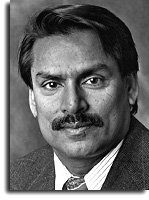

Dr. Paras N. Prasad is a Distinguished Professor of Chemistry, Physics, Medicine and Electrical Engineering, the highest rank in the New York State University system. He also holds the Samuel P. Capen Chair at the University at Buffalo and is the Executive Director of the multidisciplinary Institute for Lasers, Photonics and Biophotonics. Dr. Prasad has published over 500 scientific papers, co-edited six books, and co-authored a monograph (with D.J. Williams), “Introduction to Nonlinear Optical Effects in Molecules and Polymers.” Dr. Prasad published “Introduction to Biophotonics,” the first monograph in this field, which authoritatively defines the field, details its scope and identifies emerging opportunities. He has also published another monograph, “Nanophotonics,” which includes its impact on Nanomedicine. Dr. Prasad also holds a number of patents.
Dr. Prasad has received much recognition for his pioneering contributions. He received Scientific American’s Top 50 (2005), Fellow of SPIE (2005), 2003 Inventor of the Year in Life Sciences Award by the Technical Council of the Niagara Frontier (2004).He is a Fellow of the American Physical Society and a Fellow of the Optical Society of America. He is also a recipient of the prestigious Sloan and Guggenheim fellowships. Dr. Prasad has received the Schoellkopf Award of the Western New York American Chemical Society for his academic achievements. He was also awarded the Technology/Discovery award from the Western New York Health Care Industries Association for his pioneering work on “Nanoclinics” for Biophotonics. He has been awarded by the Chancellor of the State University of New York system the "Excellence in Pursuit of Knowledge" award. He was a recipient of the Morley Prize of the Cleveland Section of the American Chemical Society in 2004.
Dr. Prasad has also been a leader in promoting international scientific infrastructures. He organized six “International Conferences on Frontiers of Polymers and Advanced Materials (India, 1991; Indonesia, 1993; Malaysia, 1995; Egypt, 1997; Poland, 1999; Brazil, 2001).” Each of these conferences brought together top level scientists, engineers and government representatives from more than 20 countries to develop a global infrastructure for advanced materials and emerging technologies.
You can contact Dr. Prasad by e-mail at pnprasad@buffalo.edu.
For more UB information about Dr. Prasad, click here.